A gene is spatially variable when where it is expressed in
the tissue is not random: neighbouring cells look more alike than cells
picked at random. This tutorial finds such genes with
spatialAutoCor(), a single command for three classic
statistics. Everything runs on disk-backed objects
(GiottoDisk), so the same code scales from these small crops to whole
slides.
| method | asks | good at |
|---|---|---|
"moran" (Moran’s I) |
do neighbours have correlated expression levels? | broad gradients and domains |
"geary" (Geary’s C) |
how different are neighbours, on average? | sharp local differences |
"binspect" (binSpect, also
"joincount") |
after calling each cell on or off, do on cells touch each other more than chance? | sparse or patchy genes, rare cell types |
Two things make this fast and well calibrated:
- Analytic significance. P-values come from the closed-form randomisation null of each statistic, not from shuffling the tissue hundreds of times.
-
A covariate null.
null = "covariate"tests each gene against cells with similar sequencing depth (or the same cell type), so genes that only follow depth or cell composition stop looking spatial.
The tutorial uses two public datasets: a Xenium lung cancer crop (single cells, section 3–4) and a Visium HD colorectal cancer crop (8 µm bins, section 5).
1 Setup
# Giotto Suite with GiottoDisk; GiottoKernels is optional and speeds up the
# edge sums on large data
remotes::install_github("giotto-suite/GiottoUtils", ref = "dev")
GiottoUtils::suite_install("GiottoDisk", install_arrow = TRUE)
suppressMessages({
library(Giotto); library(GiottoClass); library(GiottoDisk)
library(data.table); library(ggplot2)
})
# run GiottoDisk's tiled steps on 4 parallel workers and hide progress bars
future::plan(future::multisession, workers = 4)
options(progressr.enable = FALSE)
# GiottoDisk sizes its memory use from one setting: the fraction of free RAM
# it may use (default 0.25)
options(giotto.memory_frac = 0.25)
data_dir <- "data" # downloads go here
project_dir <- "projects" # GiottoDisk projects (one per dataset)
results_folder <- "results" # every figure is saved here as a PNG
dir.create(project_dir, showWarnings = FALSE)
dir.create(results_folder, showWarnings = FALSE)
instructions <- createGiottoInstructions(
save_dir = results_folder, save_plot = TRUE,
show_plot = TRUE, return_plot = FALSE
)2 Quick start: a Xenium lung cancer crop
2.1 Create a disk-backed object
The crop is a 425 × 425 µm window of the 10x Xenium human lung cancer FFPE sample (Human Multi-Tissue and Cancer panel, 377 genes), with its transcripts, cell and nucleus boundaries and morphology images.
xen_dir <- GiottoData::getSpatialDataset("xenium_mini_lung_ffpe",
directory = data_dir)
xen_source <- sourceCreate(file.path(project_dir, "xenium"),
type = "gDirSource")
setArtifactDumpDir(xen_source)
g_xen <- createGiottoXeniumObject(
xenium_dir = xen_dir,
backend = xen_source, # creates the object as a disk-backed project
load_transcripts = TRUE,
load_expression = TRUE,
load_cellmeta = TRUE,
load_images = "focus",
instructions = instructions
)The expression matrix and, below, the spatial network are stores on disk. The statistics read them in chunks, so memory stays bounded however large the dataset is.
class(getExpression(g_xen, values = "raw", output = "matrix"))## [1] "parquetExprStore"
## attr(,"package")
## [1] "GiottoDisk"2.2 Filter, normalize and build a spatial network
g_xen <- addStatistics(g_xen, expression_values = "raw")
g_xen <- filterGiotto(g_xen,
expression_threshold = 1,
feat_det_in_min_cells = 10,
min_det_feats_per_cell = 10
)
g_xen <- normalizeGiotto(g_xen, scale_feats = FALSE, scale_cells = FALSE)
# the Delaunay network joins each cell to its natural neighbours
g_xen <- createSpatialNetwork(g_xen, method = "Delaunay")
g_zoom <- crop(g_xen, c(150, 250, -300, -200), view = "roi")
spatPlot2D(g_zoom,
show_network = TRUE, network_color = "#4FC3F7",
spatial_network_name = "Delaunay_network",
point_size = 1.5, point_alpha = 1, background_color = "black",
view = "roi",
save_param = list(save_name = "01-delaunay-network")
)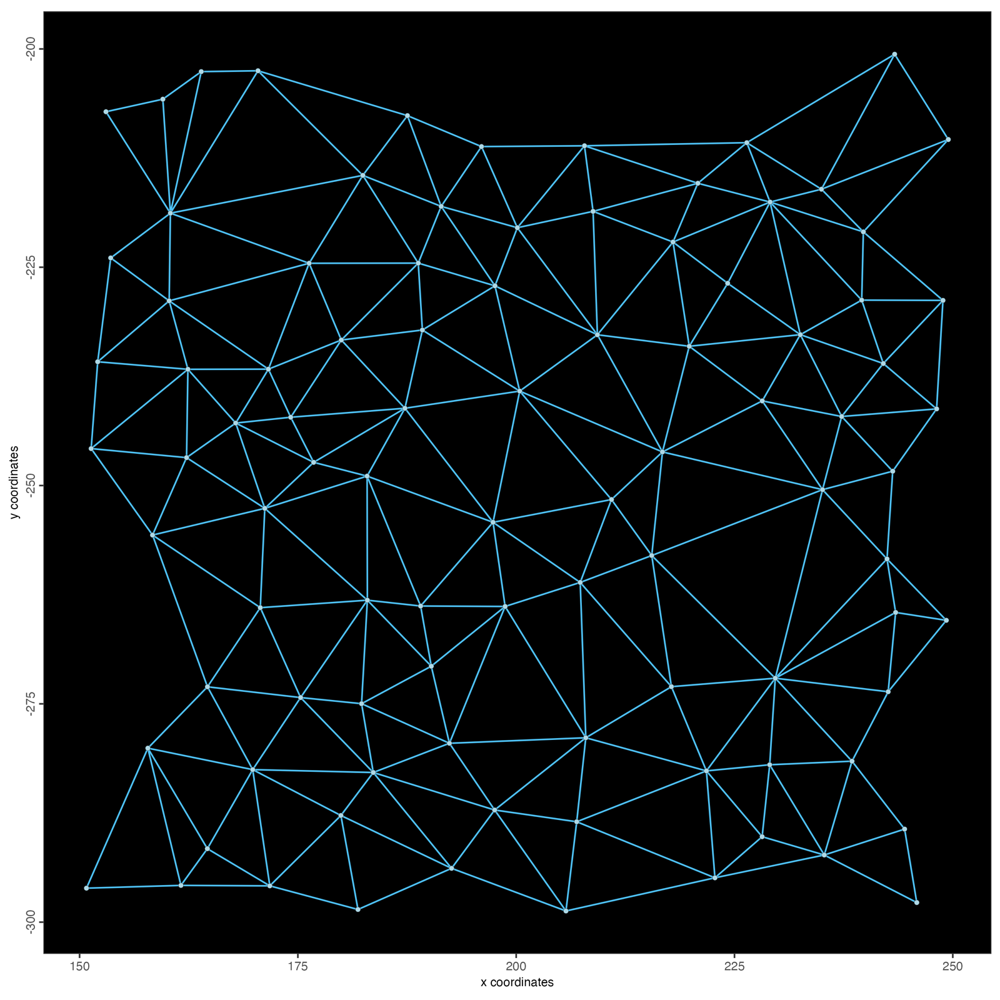
2.3 Find spatial genes
bs_xen <- spatialAutoCor(g_xen, method = "binspect", return_gobject = FALSE)
bs_xen[1:8, .(feats, statistic, expected, z, adj.p.value, n_on, odds_ratio)]## feats statistic expected z adj.p.value n_on odds_ratio
## <char> <num> <num> <num> <num> <num> <num>
## 1: MARCO 268 68.58911 26.75583 1.721670e-155 188 12.552041
## 2: MCEMP1 251 64.97977 25.56765 2.848251e-142 183 11.136574
## 3: MALL 1870 1407.93413 22.91926 1.622512e-114 850 7.020221
## 4: EPCAM 1683 1234.62742 22.45591 4.565162e-110 796 6.735536
## 5: GPRC5A 1262 871.88318 20.65363 2.952181e-93 669 5.053945
## 6: CYP2B6 1094 729.53873 20.10209 1.922036e-88 612 4.942007
## 7: CYP4B1 956 615.11299 19.67081 8.932170e-85 562 4.677609
## 8: STEAP4 894 567.85604 19.25584 2.569590e-81 540 4.409562Each row is a gene. For binSpect, statistic counts
network edges whose two cells are both on,
expected is that count under the randomisation null, and
z is the standardised difference. n_on is how
many cells were called on, and odds_ratio is the
odds ratio of the 2 × 2 table of edges by the on/off state of their two
cells (the estimate of earlier binSpect versions). The
table is sorted by z.
With return_gobject = TRUE (the default), the results
are written to the feature metadata instead, as binspect.z,
binspect.p and binspect.padj (and
binSpect.pval, which doHMRF() reads):
g_xen <- spatialAutoCor(g_xen, method = "binspect")
fDataDT(g_xen)[order(-binspect.z)][1:4, .(feat_ID, binspect.z, binspect.padj)]## feat_ID binspect.z binspect.padj
## <char> <num> <num>
## 1: MARCO 26.75583 1.721670e-155
## 2: MCEMP1 25.56765 2.848251e-142
## 3: MALL 22.91926 1.622512e-114
## 4: EPCAM 22.45591 4.565162e-110The top genes, plotted as their transcripts over the cell boundaries:
top4 <- bs_xen$feats[1:4]
spatInSituPlotPoints(g_xen,
show_image = TRUE, image_name = "bound1", # morphology_focus_0000: DAPI
feats = list(rna = top4), feat_type = "rna", use_overlap = FALSE,
feats_color_code = c("#FFD54F", "#FF7043", "#4FC3F7", "#AED581"),
point_size = 0.4, plot_last = "points",
show_polygon = TRUE, polygon_feat_type = "cell",
polygon_color = "grey60", polygon_line_size = 0.05, polygon_alpha = 0,
background_color = "black",
save_param = list(save_name = "02-binspect-top-insitu")
)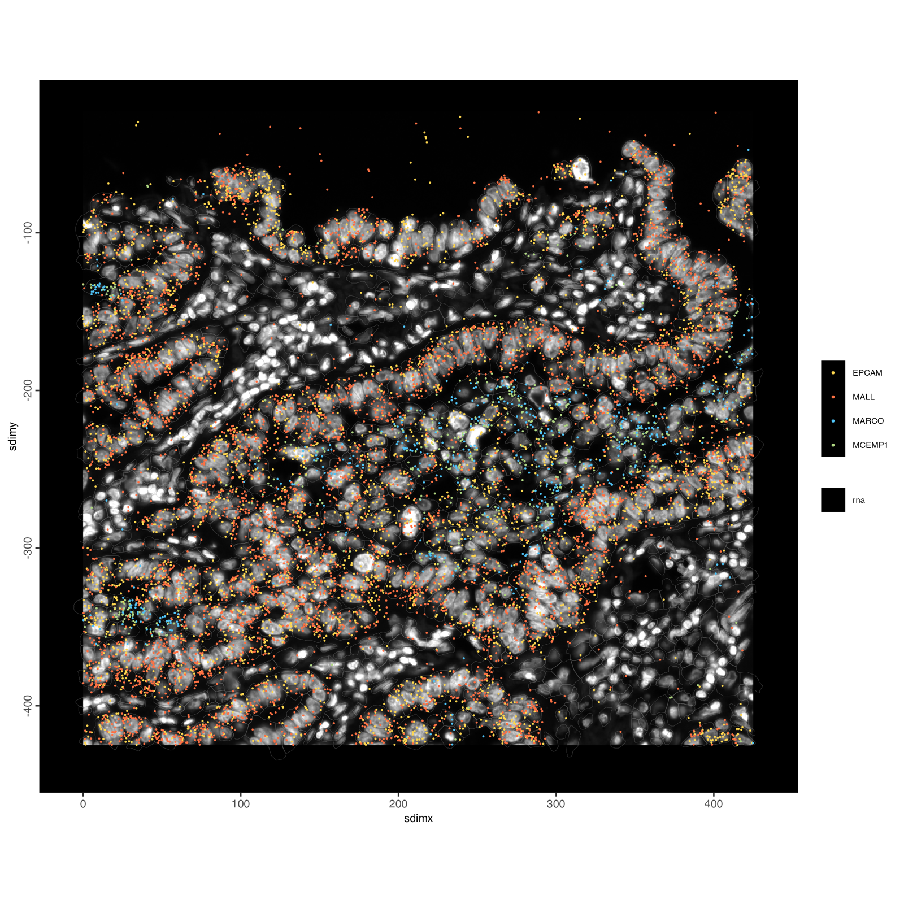
2.4 What binSpect counts
binSpect first calls every cell on or off for a
gene. The default rule, bin_method = "kmeans", splits the
gene’s values into two groups with an exact one-dimensional 2-means
(Otsu’s threshold). histThreshold() exposes that rule, so
we can redraw what the test sees for the top gene and for a gene with no
pattern:
genes <- c(bs_xen$feats[1], "ACTG2")
vals <- spatValues(g_xen, feats = genes, expression_values = "normalized")
locs <- getSpatialLocations(g_xen, output = "data.table")
edges <- getSpatialNetwork(g_xen, name = "Delaunay_network",
output = "networkDT")
panel <- function(gene) {
v <- vals[[gene]]
tab <- table(v)
thr <- histThreshold(as.numeric(names(tab)), as.numeric(tab))
on <- setNames(v > thr, vals$cell_ID)
e <- edges[, .(from, to, both_on = on[from] & on[to])]
e[locs, on = .(from = cell_ID), `:=`(x0 = i.sdimx, y0 = i.sdimy)]
e[locs, on = .(to = cell_ID), `:=`(x1 = i.sdimx, y1 = i.sdimy)]
pts <- merge(locs, data.table(cell_ID = names(on), on = on), by = "cell_ID")
ggplot() +
geom_segment(data = e[both_on == FALSE],
aes(x0, y0, xend = x1, yend = y1),
colour = "grey30", linewidth = 0.15) +
geom_segment(data = e[both_on == TRUE],
aes(x0, y0, xend = x1, yend = y1),
colour = "#FFD54F", linewidth = 0.5) +
geom_point(data = pts, aes(sdimx, sdimy, colour = on), size = 0.6) +
scale_colour_manual(values = c(`FALSE` = "grey45", `TRUE` = "#FF7043"),
labels = c("off", "on"), name = NULL) +
coord_fixed() + theme_void(base_size = 10) +
theme(plot.background = element_rect(fill = "black", colour = NA),
plot.margin = margin(10, 10, 10, 10),
text = element_text(colour = "white")) +
labs(title = sprintf("%s: %d on cells, %d on-on edges (%.0f expected)",
gene, sum(on), sum(e$both_on),
bs_xen[feats == gene, expected]))
}
p <- cowplot::plot_grid(panel(genes[1]), panel(genes[2]), ncol = 2)
ggsave(file.path(results_folder, "03-binspect-explained.png"), p,
width = 11, height = 5, dpi = 150)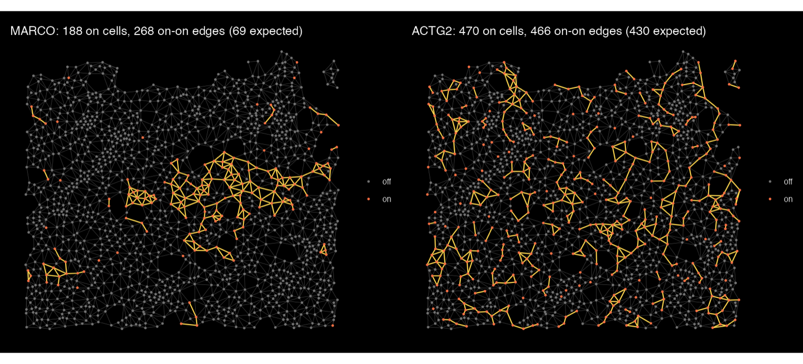
Yellow edges join two on cells. MARCO, a marker of alveolar macrophages, is on in only 188 cells, but they sit together: 268 edges join two on cells where about 69 are expected if the same cells were scattered at random. ACTG2 is on in more cells, but its on-on edges (466) are close to what chance gives (430).
2.5 Compare the three statistics
All three methods take the same arguments. Running them side by side:
res <- lapply(c(moran = "moran", geary = "geary", binspect = "binspect"),
function(m) spatialAutoCor(g_xen, method = m, return_gobject = FALSE))
z <- Reduce(function(a, b) merge(a, b, by = "feats"),
lapply(names(res), function(m)
setnames(res[[m]][, .(feats, z)], "z", paste0("z_", m))))
cor(z[, -1], method = "spearman", use = "complete.obs")## z_moran z_geary z_binspect
## z_moran 1.0000000 0.9198885 0.9924898
## z_geary 0.9198885 1.0000000 0.9055192
## z_binspect 0.9924898 0.9055192 1.0000000
label <- c("TFPI", "TCIM", "CD163", "MRC1", "CPA3", "AQP9", "ACTG2",
bs_xen$feats[1:2], z[order(-z_moran), feats][1:3])
p <- ggplot(z, aes(z_moran, z_binspect)) +
geom_abline(colour = "grey70", linetype = 2) +
geom_point(aes(colour = z_geary), size = 1.6) +
ggrepel::geom_text_repel(data = z[feats %in% label], aes(label = feats),
size = 3.2, min.segment.length = 0) +
scale_colour_viridis_c(name = "Geary z") +
labs(x = "Moran's I z-score", y = "binSpect z-score") +
theme_classic(base_size = 11)
ggsave(file.path(results_folder, "04-moran-vs-binspect.png"), p,
width = 6.5, height = 5.5, dpi = 150)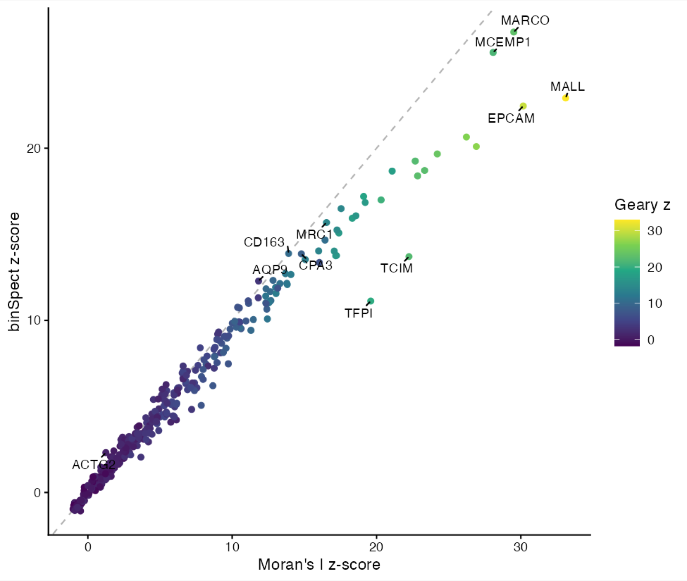
The methods agree on most genes; where they differ, it is informative. Genes above the diagonal are favoured by binSpect, below it by Moran’s I:
# fill each cell by a value (here a gene's normalized expression); the
# colour scale is capped at the 95th percentile of the cells above 0, so a
# few very high cells do not wash out the pattern
fill_map <- function(gobject, feat, title = feat, ...) {
v <- spatValues(gobject, feats = feat, ...)
cap <- quantile(v[[feat]][v[[feat]] > 0], 0.95)
v <- data.table(cell_ID = v$cell_ID, expression = pmin(v[[feat]], cap))
gobject <- addCellMetadata(gobject, new_metadata = v,
by_column = TRUE, column_cell_ID = "cell_ID")
spatInSituPlotPoints(gobject,
polygon_feat_type = "cell", show_polygon = TRUE,
polygon_fill = "expression", polygon_fill_gradient_style = "sequential",
polygon_color = "grey15", polygon_line_size = 0.05, polygon_alpha = 1,
background_color = "black", show_legend = FALSE, show_axes = FALSE,
show_plot = FALSE, save_plot = FALSE, return_plot = TRUE) +
ggtitle(title) +
theme(plot.background = element_rect(fill = "black", colour = NA),
plot.title = element_text(colour = "white", size = 14, hjust = 0.5))
}
p <- cowplot::plot_grid(plotlist = lapply(c("TFPI", "CD163", "ACTG2"),
fill_map, gobject = g_xen,
expression_values = "normalized"),
nrow = 1)
ggsave(file.path(results_folder, "05-method-maps.png"), p,
width = 13, height = 4.6, dpi = 150)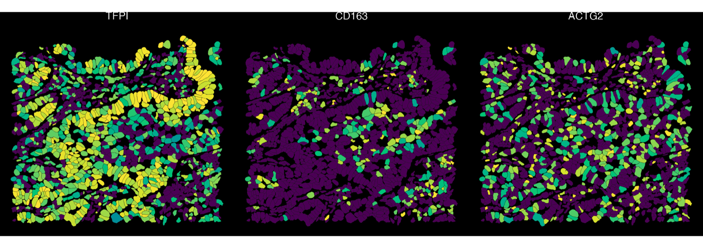
TFPI is expressed throughout the epithelium at levels that fade towards the stroma: a broad gradient, which Moran’s I, working on the expression level, scores higher than binSpect. CD163, a macrophage marker, is high in few cells that cluster together, which binSpect ranks higher. ACTG2 shows no pattern under any of the three.
3 Spatial co-expression modules
Spatial genes often share a pattern: the genes of one cell type or
region rise and fall together. spatialCoexpression() groups
them into modules. It smooths each cell’s expression with its
neighbours’, correlates the genes on the smoothed values, clusters the
correlation, and scores every module in every cell. On this disk-backed
object the smoothing and the correlation run on the stores.
top_genes <- bs_xen$feats[1:80]
g_xen <- spatialCoexpression(g_xen,
feats = top_genes,
spatial_network_name = "Delaunay_network",
n_modules = 6
)
coexpr <- spatialCoexpression(g_xen,
feats = top_genes,
spatial_network_name = "Delaunay_network",
n_modules = 6,
return_gobject = FALSE
)
coexpr$summary## module size within_cor between_cor score
## <int> <int> <num> <num> <num>
## 1: 2 26 0.5565854 -0.260558067 0.5565854
## 2: 1 14 0.5528519 -0.030621812 0.4257312
## 3: 5 7 0.5500639 0.008921023 0.4018332
## 4: 4 12 0.4166297 -0.081124593 0.3418724
## 5: 3 13 0.4064160 -0.081006461 0.3334434
## 6: 6 8 0.3181477 -0.037948786 0.2473251Each module’s genes are in the feature metadata
(spatial_module), and its scores per cell are the spatial
enrichment spatial_module. The heatmap shows the gene-gene
correlation, ordered and annotated by module:
heatmapCoexpression(g_xen, coexpr,
save_param = list(save_name = "12-coexpression-heatmap"))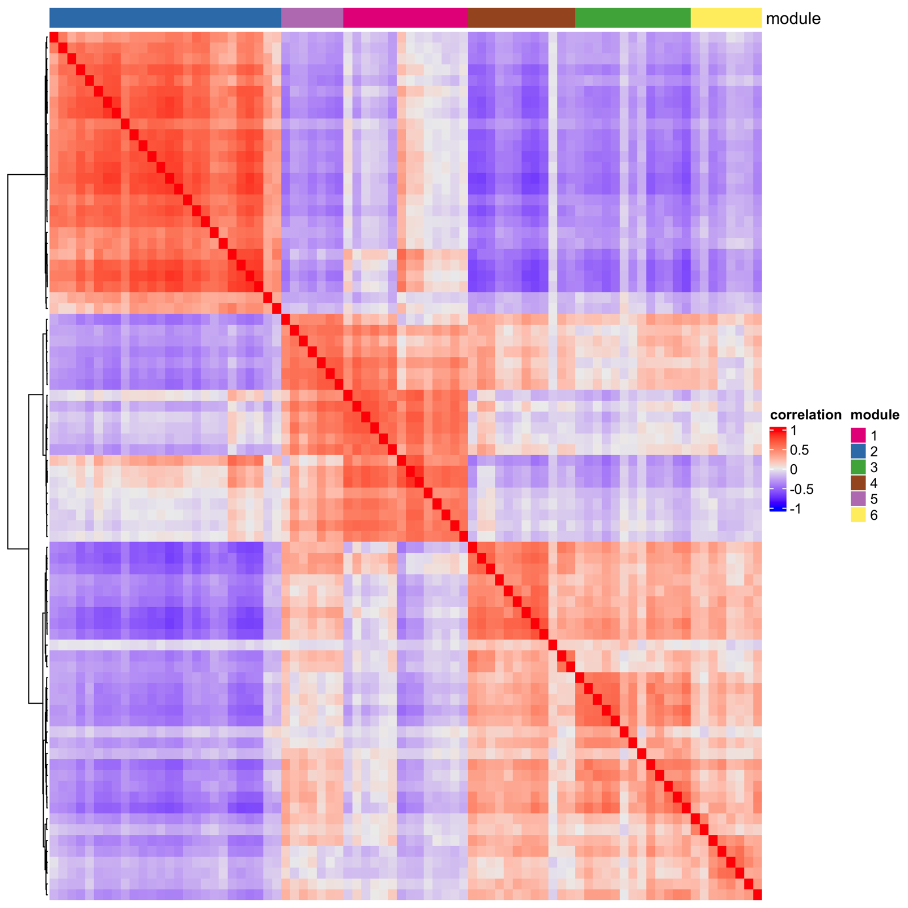
The three most distinct modules in the tissue, each titled with its genes that belong to it most firmly:
module_title <- function(m) {
genes <- coexpr$feats[module == m][order(-module_cor), feat_ID]
sprintf("module %s: %s", m, paste(head(genes, 3), collapse = ", "))
}
mods <- head(coexpr$summary$module, 3)
p <- cowplot::plot_grid(plotlist = lapply(mods, function(m)
fill_map(g_xen, as.character(m), title = module_title(m),
spat_enr_name = "spatial_module")), nrow = 1)
ggsave(file.path(results_folder, "13-module-maps.png"), p,
width = 13, height = 4.6, dpi = 150)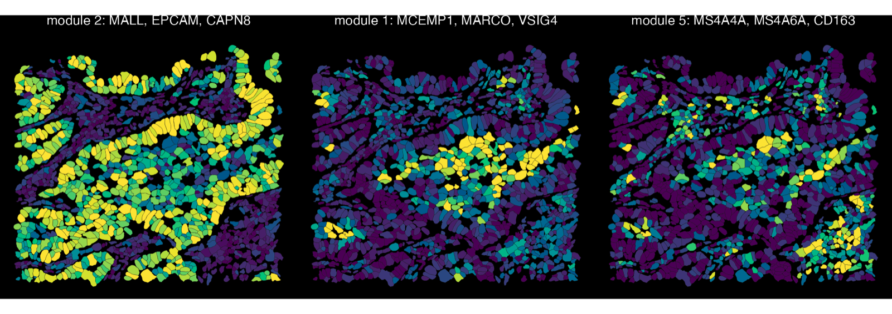
The epithelial module (MALL, EPCAM, CAPN8) covers the airway and tumour epithelium. The two macrophage modules separate alveolar macrophages (MCEMP1, MARCO, VSIG4) in the airspaces from CD163-high interstitial macrophages (MS4A4A, MS4A6A, CD163) in the stroma, a distinction no single gene ranking makes.
See Detection of spatial co-expression modules for the options.
4 Spatial genes within cell types
A cell-type marker is spatial almost by definition: the cell type sits somewhere in the tissue. To find genes that vary within a cell type, condition the null on the cell type itself. First, quick clusters:
g_xen <- runPCA(g_xen, feats_to_use = NULL, ncp = 20)
g_xen <- createNearestNetwork(g_xen, dimensions_to_use = 1:15, k = 15)
g_xen <- doLeidenClusterIgraph(g_xen, resolution = 0.4, name = "leiden_clus")
spatInSituPlotPoints(g_xen,
polygon_feat_type = "cell", show_polygon = TRUE,
polygon_fill = "leiden_clus", polygon_fill_as_factor = TRUE,
polygon_color = "grey20", polygon_line_size = 0.05, polygon_alpha = 1,
background_color = "black",
save_param = list(save_name = "06-clusters")
)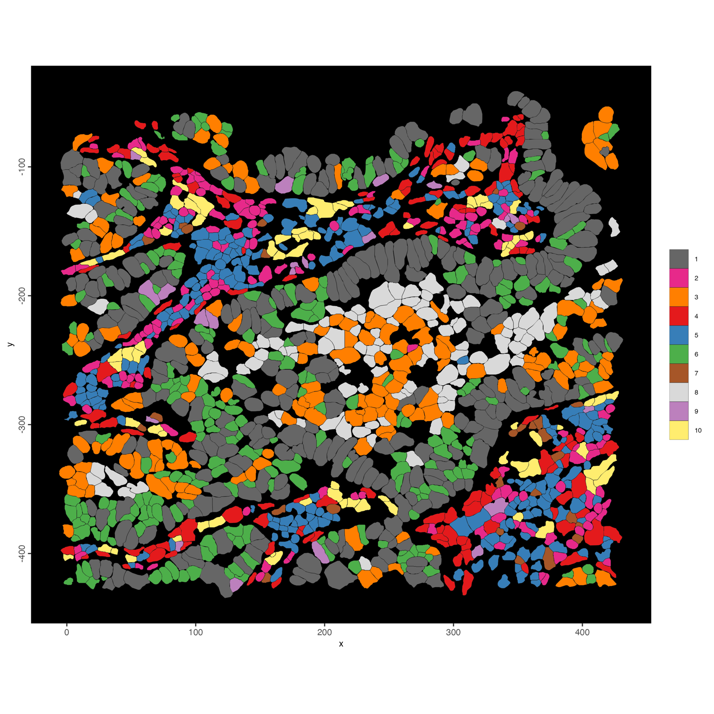
null = "covariate" with
covariate = "leiden_clus" compares each cell only with
cells of the same cluster:
within <- spatialAutoCor(g_xen, method = "moran", null = "covariate",
covariate = "leiden_clus", return_gobject = FALSE)
w <- merge(res$moran[, .(feats, z_tissue = z)],
within[, .(feats, z_within = z)], by = "feats")
label <- c("EGFR", "PPARG", "KRT7", "STEAP4", "CXCL9", "PCSK2", "CPA3", "MALL")
p <- ggplot(w, aes(z_tissue, z_within)) +
geom_abline(colour = "grey70", linetype = 2) +
geom_point(colour = "grey40", size = 1.4) +
geom_point(data = w[feats %in% label], colour = "#E64A19", size = 2) +
ggrepel::geom_text_repel(data = w[feats %in% label], aes(label = feats),
size = 3.2, min.segment.length = 0) +
labs(x = "Moran z (permutation null)",
y = "Moran z (within clusters)") +
theme_classic(base_size = 11)
ggsave(file.path(results_folder, "07-within-clusters.png"), p,
width = 6.5, height = 5.5, dpi = 150)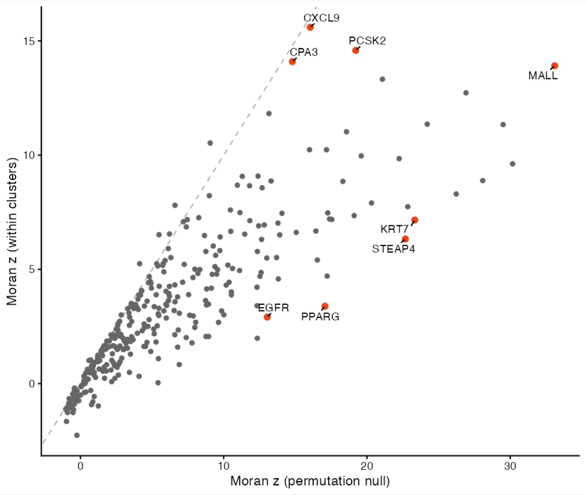
p <- cowplot::plot_grid(plotlist = lapply(c("KRT7", "PPARG", "PCSK2", "CXCL9"),
fill_map, gobject = g_xen,
expression_values = "normalized"),
nrow = 1)
ggsave(file.path(results_folder, "08-within-maps.png"), p,
width = 16, height = 4.6, dpi = 150)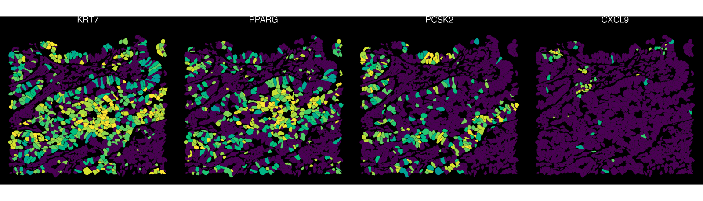
Markers of a cell type drop sharply: KRT7 and PPARG cover the epithelial clusters wholesale, so once each cell is compared only with cells of its own cluster, little pattern is left. Genes that keep a high score vary within their cell type: PCSK2 is high in only part of the epithelium, and CXCL9 in a single small focus.
5 Sequencing depth: a Visium HD crop
On sequencing-based data, the number of molecules captured per spot or bin varies across the tissue, and many genes simply follow it. Under the permutation null those genes look spatial. This crop is a 400 × 400 µm window of the 10x Visium HD colorectal cancer sample, at the tissue edge.
vhd_dir <- GiottoData::getSpatialDataset("visiumhd_mini_crc",
directory = data_dir)
vhd_source <- sourceCreate(file.path(project_dir, "visiumhd"),
type = "gDirSource")
setArtifactDumpDir(vhd_source)
g_vhd <- createGiottoVisiumHDObjectBin(
file.path(vhd_dir, "binned_outputs"),
bin = 8,
backend = vhd_source,
instructions = instructions
)
g_vhd <- addStatistics(g_vhd, expression_values = "raw")
g_vhd <- filterGiotto(g_vhd,
expression_threshold = 1,
feat_det_in_min_cells = 20,
min_det_feats_per_cell = 20
)
g_vhd <- normalizeGiotto(g_vhd, scale_feats = FALSE, scale_cells = FALSE)
g_vhd <- addStatistics(g_vhd, expression_values = "raw")
# the 8 nearest bins
g_vhd <- createSpatialNetwork(g_vhd, method = "kNN", k = 8,
name = "kNN_network")
spatPlot2D(g_vhd,
show_image = TRUE, image_name = "image",
cell_color = "total_expr", color_as_factor = FALSE,
cell_color_gradient = "viridis", point_size = 1.6, point_alpha = 0.9,
save_param = list(save_name = "09-vhd-depth")
)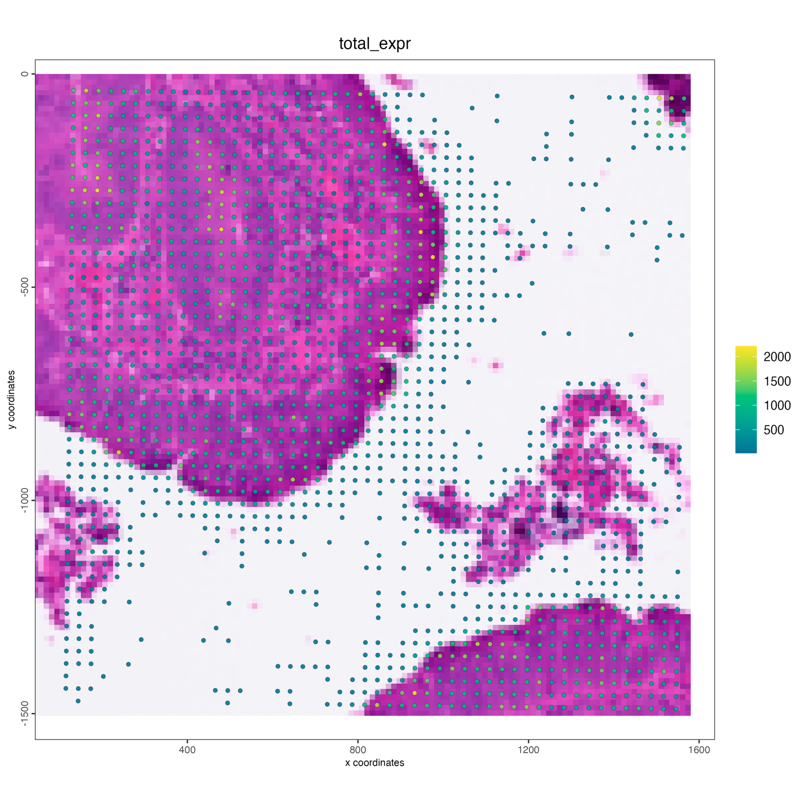
Run Moran’s I with both nulls. covariate = "libsize"
(the default) cuts the bins into n_groups (default 10)
quantile groups of total counts and tests each gene against bins of
similar depth:
perm <- spatialAutoCor(g_vhd, method = "moran",
spatial_network_name = "kNN_network",
return_gobject = FALSE)
cov <- spatialAutoCor(g_vhd, method = "moran", null = "covariate",
covariate = "libsize",
spatial_network_name = "kNN_network",
return_gobject = FALSE)
c(permutation = sum(perm$adj.p.value < 0.01, na.rm = TRUE),
covariate = sum(cov$adj.p.value < 0.01, na.rm = TRUE))## permutation covariate
## 3617 917
v <- merge(perm[, .(feats, z_perm = z)], cov[, .(feats, z_cov = z)],
by = "feats")
label <- c("ACTB", "OAZ1", "TMSB4X", "MT-CO1", "FTL",
"IGHA1", "JCHAIN", "VIM", "COL3A1", "LYZ")
p <- ggplot(v, aes(z_perm, z_cov)) +
geom_abline(colour = "grey70", linetype = 2) +
geom_point(colour = "grey50", size = 0.6, alpha = 0.5) +
geom_point(data = v[feats %in% label], colour = "#E64A19", size = 1.8) +
ggrepel::geom_text_repel(data = v[feats %in% label], aes(label = feats),
size = 3.2, min.segment.length = 0) +
labs(x = "Moran z (permutation null)",
y = "Moran z (covariate null, library size)") +
theme_classic(base_size = 11)
ggsave(file.path(results_folder, "10-vhd-nulls.png"), p,
width = 6.5, height = 5.5, dpi = 150)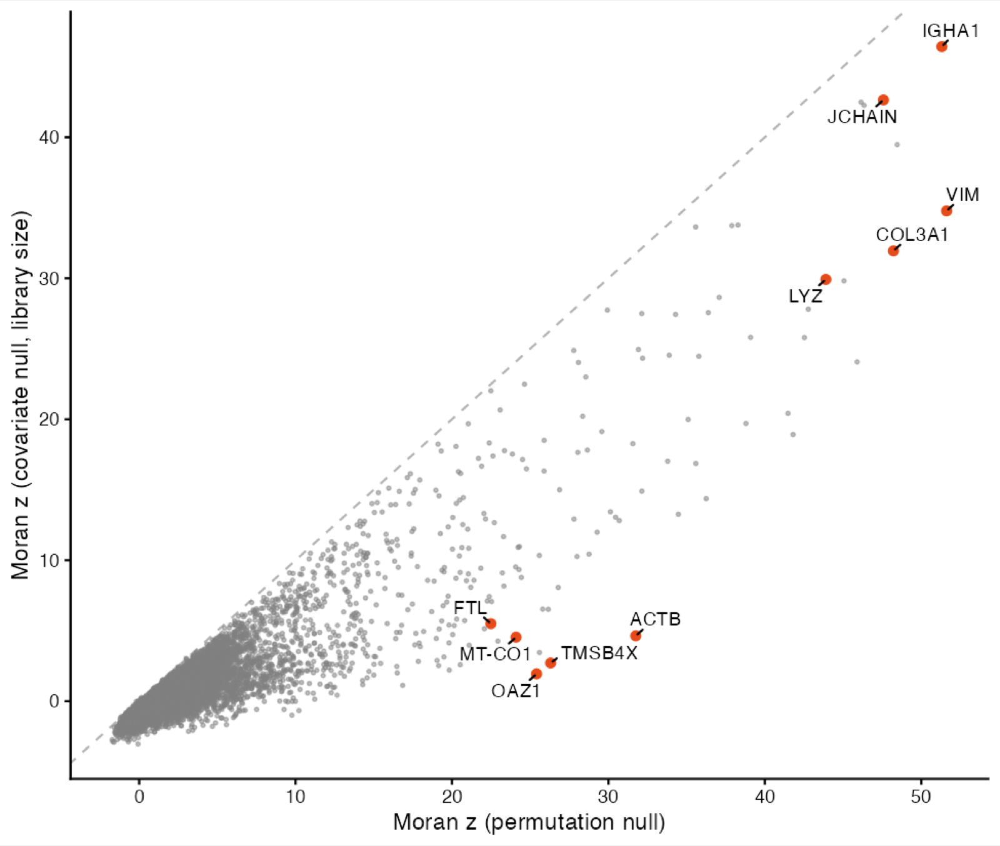
spatFeatPlot2D(g_vhd,
feats = c("ACTB", "OAZ1", "IGHA1", "COL3A1"),
expression_values = "normalized",
cell_color_gradient = "viridis", point_size = 1.2,
cow_n_col = 2,
save_param = list(save_name = "11-vhd-maps")
)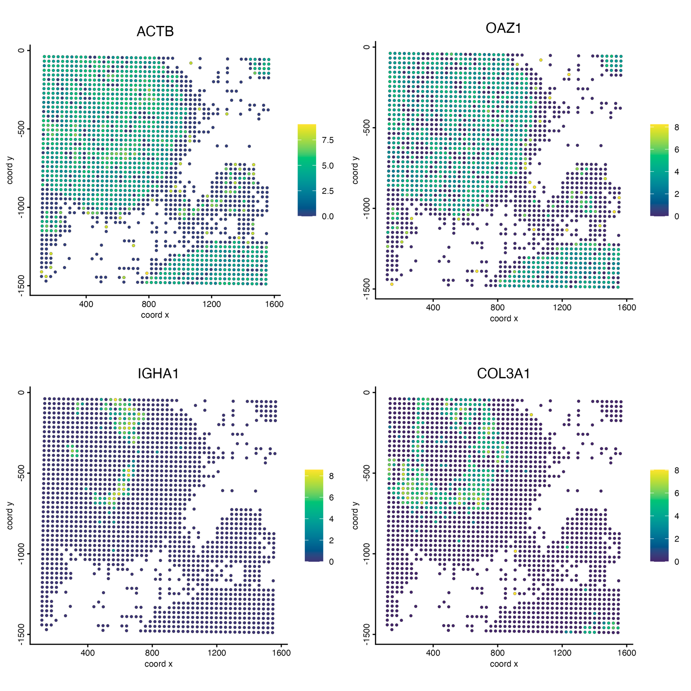
Under the permutation null 3,617 of 9,143 genes are significant at a 1% false discovery rate; conditioned on library size, 917 are. Housekeeping and mitochondrial genes (ACTB, OAZ1, TMSB4X, MT-CO1, FTL) fall from the top 100 to below rank 300: their maps trace the dense epithelium, where more molecules are captured per bin. Immunoglobulins (IGHA1, JCHAIN), VIM, COL3A1 and LYZ keep their scores; they follow plasma cells, stroma and myeloid cells rather than depth.
The same works for binSpect
(spatialAutoCor(g_vhd, method = "binspect", null = "covariate")).
Geary’s C has no covariate null.
6 Choosing a method and using the results
| you want | use |
|---|---|
| a robust default ranking | method = "moran" |
| sparse genes, rare cell types, or a binary on/off view | method = "binspect" |
| genes with sharp local boundaries | method = "geary" |
| sequencing-based data (Visium, Visium HD, Stereo-seq) | add null = "covariate"
|
| genes that vary within cell types | null = "covariate", covariate = "<cell type column>" |
Some details:
-
feats =tests only the given genes; the multiple-testing correction then counts only those genes. -
weighted = TRUEuses the network’s edge weights (Moran’s I and Geary’s C); the default treats every edge alike. - Genes with the same value in every cell cannot be tested and get
NA. - The same call works on in-memory objects, and on a matrix or
GiottoDisk store directly through
analyzeData(x, spatAutoCorParam(...), network = ).
6.1 binSpect()
binSpect() runs the same join-count test as
spatialAutoCor(method = "binspect") and keeps its familiar
arguments (bin_method = "rank",
percentage_rank, subset_feats, …). The
previous implementation, with a Fisher test per gene, is available as
binSpect(implementation = "data.table"), and is chosen
automatically when you use options only it has
(calc_hub = TRUE, spatial_network_k,
bin_matrix, do_fisher_test = FALSE).
6.2 Next steps
Spatial genes are the input to several downstream analyses:
-
Spatial co-expression
modules: more on
spatialCoexpression()and its options. -
Spatial domains with HMRF reads
binSpect.pvalfrom the feature metadata. - Spatially informed clusters: cluster cells on spatial genes only.
7 Session Info
## R version 4.5.3 (2026-03-11)
## Platform: aarch64-apple-darwin20
## Running under: macOS Tahoe 26.6.2
##
## Matrix products: default
## BLAS: /Library/Frameworks/R.framework/Versions/4.5-arm64/Resources/lib/libRblas.0.dylib
## LAPACK: /Library/Frameworks/R.framework/Versions/4.5-arm64/Resources/lib/libRlapack.dylib; LAPACK version 3.12.1
##
## locale:
## [1] C.UTF-8/C.UTF-8/C.UTF-8/C/C.UTF-8/C.UTF-8
##
## time zone: America/New_York
## tzcode source: internal
##
## attached base packages:
## [1] stats graphics grDevices utils datasets methods base
##
## other attached packages:
## [1] ggplot2_4.0.2 data.table_1.18.2.1 GiottoDisk_0.0.0.5 Giotto_4.3.4
## [5] GiottoClass_0.7.16
##
## loaded via a namespace (and not attached):
## [1] RColorBrewer_1.1-3 jsonlite_2.0.0 wk_0.9.5
## [4] shape_1.4.6.1 magrittr_2.0.4 magick_2.9.1
## [7] farver_2.1.2 GlobalOptions_0.1.4 ragg_1.5.2
## [10] vctrs_0.7.2 memoise_2.0.1 GiottoUtils_0.2.8
## [13] terra_1.9-11 htmltools_0.5.9 S4Arrays_1.10.1
## [16] BiocNeighbors_2.4.0 SparseArray_1.10.9 parallelly_1.47.0
## [19] htmlwidgets_1.6.4 plotly_4.12.0 cachem_1.1.0
## [22] igraph_2.2.2 lifecycle_1.0.5 iterators_1.0.14
## [25] pkgconfig_2.0.3 rsvd_1.0.5 Matrix_1.7-5
## [28] R6_2.6.1 fastmap_1.2.0 MatrixGenerics_1.22.0
## [31] future_1.70.0 clue_0.3-68 digest_0.6.39
## [34] colorspace_2.1-2 S4Vectors_0.48.0 irlba_2.3.7
## [37] textshaping_1.0.5 GenomicRanges_1.62.1 beachmat_2.26.0
## [40] labeling_0.4.3 progressr_0.18.0 httr_1.4.8
## [43] polyclip_1.10-7 abind_1.4-8 compiler_4.5.3
## [46] bit64_4.6.0-1 withr_3.0.2 doParallel_1.0.17
## [49] S7_0.2.1 backports_1.5.0 BiocParallel_1.44.0
## [52] viridis_0.6.5 ggforce_0.5.0 R.utils_2.13.0
## [55] MASS_7.3-65 DelayedArray_0.36.0 rjson_0.2.23
## [58] bluster_1.20.0 gtools_3.9.5 GiottoVisuals_0.2.16
## [61] tools_4.5.3 future.apply_1.20.2 R.oo_1.27.1
## [64] glue_1.8.0 dbscan_1.2.4 grid_4.5.3
## [67] checkmate_2.3.4 cluster_2.1.8.2 generics_0.1.4
## [70] hdf5r_1.3.12 gtable_0.3.6 R.methodsS3_1.8.2
## [73] tidyr_1.3.2 BiocSingular_1.26.1 tidygraph_1.3.1
## [76] ScaledMatrix_1.18.0 xml2_1.5.2 XVector_0.50.0
## [79] BiocGenerics_0.56.0 tilework_1.0.0 ggrepel_0.9.8
## [82] foreach_1.5.2 pillar_1.11.1 nanoarrow_0.9.0
## [85] circlize_0.4.18 dplyr_1.2.0 tweenr_2.0.3
## [88] lattice_0.22-9 bit_4.6.0 deldir_2.0-4
## [91] tidyselect_1.2.1 ComplexHeatmap_2.26.1 SingleCellExperiment_1.32.0
## [94] gridExtra_2.3 IRanges_2.44.0 Seqinfo_1.0.0
## [97] SummarizedExperiment_1.40.0 scattermore_1.2 stats4_4.5.3
## [100] graphlayouts_1.2.3 Biobase_2.70.0 matrixStats_1.5.0
## [103] lazyeval_0.2.2 GiottoKernels_0.3.0 codetools_0.2-20
## [106] ggraph_2.2.2 GiottoData_0.3.8 tibble_3.3.1
## [109] colorRamp2_0.1.0 cli_3.6.5 arrow_23.0.1.2
## [112] systemfonts_1.3.2 dichromat_2.0-0.1 Rcpp_1.1.1
## [115] globals_0.19.1 png_0.1-9 parallel_4.5.3
## [118] assertthat_0.2.1 listenv_0.10.1 SpatialExperiment_1.20.0
## [121] viridisLite_0.4.3 scales_1.4.0 purrr_1.2.1
## [124] crayon_1.5.3 GetoptLong_1.1.1 rlang_1.3.0
## [127] cowplot_1.2.0
## Warning messages:
## 1: Skipping empty giottoPoints (0 features) for feat_type: GenomicControl
## 2: The `polygon_name` argument of `getPolygonInfo()` is deprecated as of GiottoClass 0.5.2.
## ℹ Please use the `name` argument instead.
## ℹ The deprecated feature was likely used in the GiottoClass package.
## Please report the issue at <https://github.com/giotto-suite/Giotto/issues>.
## 3: In doTryCatch(return(expr), name, parentenv, handler) :
## You need to select features (feats) and modify feature
## types (feat_type) if you want to show individual features
## (e.g. transcripts)
## This warning is shown once per session
## 4: 008um_outputs.tar not detected in visiumHD directory
## 5: 002um_outputs.tar not detected in visiumHD directory